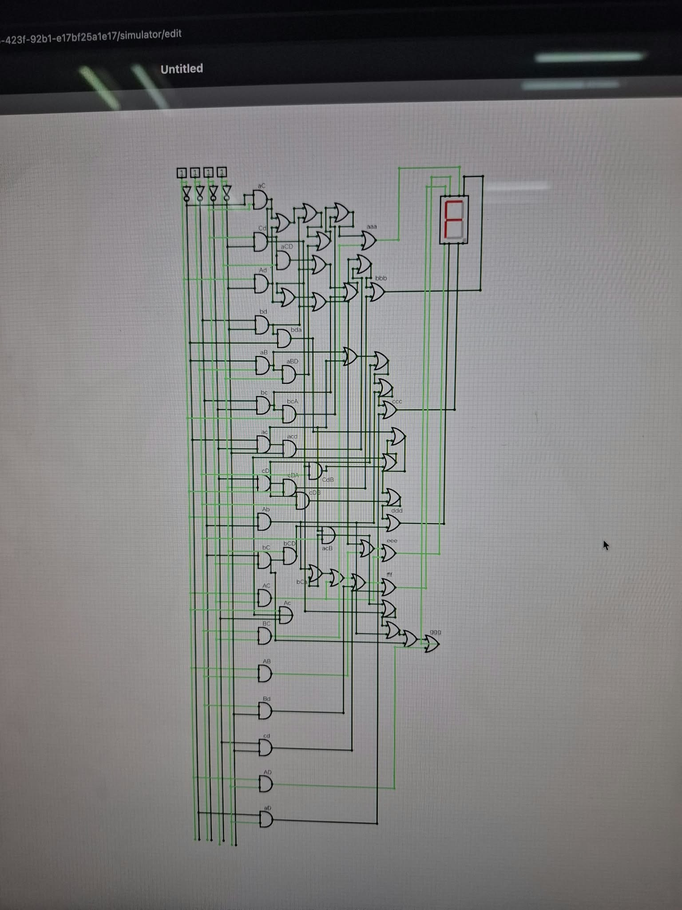
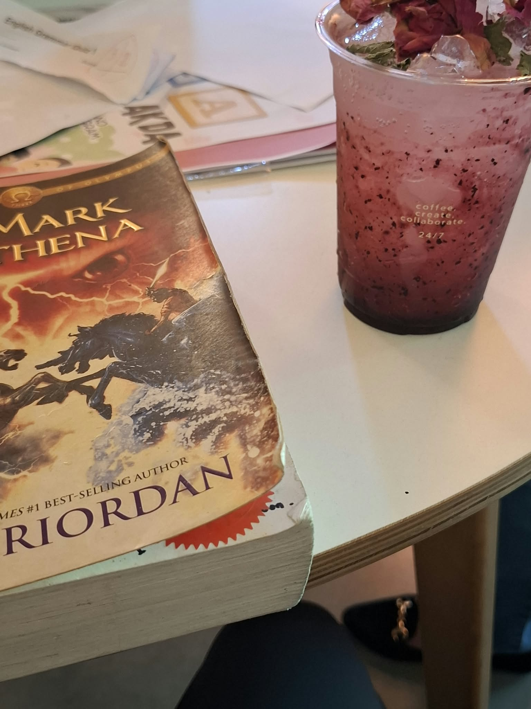

GET TO KNOW ME
About Me
Greetings! I'm MJ, a student passionate about technology, design, and continuous learning. This portfolio serves as a collection of my growth, projects, and future aspirations.
Who I Am
I've come to enjoy exploring how code and creative design come together to solve real-world problems through practicality and to build meaningful experiences.
BACKGROUND
Academic Focus
Currently focused on expanding my skills in software development, web design, and logical problem solving.
EDUCATION
Beyond the Code
Outside of academics, I stay curious by exploring creative writing, design concepts, and personal projects.
INTERESTSPersonal & Contact Details
- Full Name: Marc Jherrim G. Dumapis
- Preferred Name / Alias: M.J.
- Email: marcjherr@gmail.com
- Location: Baguio City, Philippines
- Birthdate: April 27
- Civil Status: Single
- Languages Spoken: English, Tagalog, Ilocano
Academic Information
- Student ID: 26-4962-929
- Degree Program: BS Information Technology
- Specialization / Track: Network and Security
- Year Level & Status: 1st Year - Regular
- Section / Block: CITCS 1E-Group A
- Instructor / Adviser: Felipe A. Pati, Jr., MCS, PhD
Technical Profile
- Target Role : Web Developer
- Programming Languages: HTML, CSS, Python, Java
- Tools & Frameworks:VS Code, Linux
- Certifications: In Progress
Personal Insights
- Personal Motto: "memento vivere, memento amoris"
- Hobbies: Writing, Gaming, Fitness, Music
- Future Goal: Guaduate from University of the Cordilleras and provide for my family